-
8th feb, 2021
First day
Introduction to Creative Technology
We watched a documentary with the entire class about creativity.
We agreed that the project should change the way people do something.
Geert told us to track our creativity during the day. -
9th feb, 2021
Created GIT repo
IOT introduction and working with Arduino
I created my Git repo for the discord bot, created an arduino project for the lecture that Ronald gave us.

-
10th feb, 2021
Brainstorming sessions with breakout rooms
We discussed ideas for the individual project and what our goal for this semester is. We got seperated in break out rooms where we discussed ideas.
I had a few ideas:
1.Discord bot (which I chose to go for)
2. E-commerce website -
11th feb, 2021
What is a vision?
We had a brainstorm session where we discussed if technology can change the way people think and/or interact with it and what effects it might or might not have on humanity. I also learned that a vision statement should be a concrete way for stakeholders to understand the meaning and purpose of your idea.
We all created vision boards, and I was unsure what it meant so I missed the mark on it, but this is what it looks like: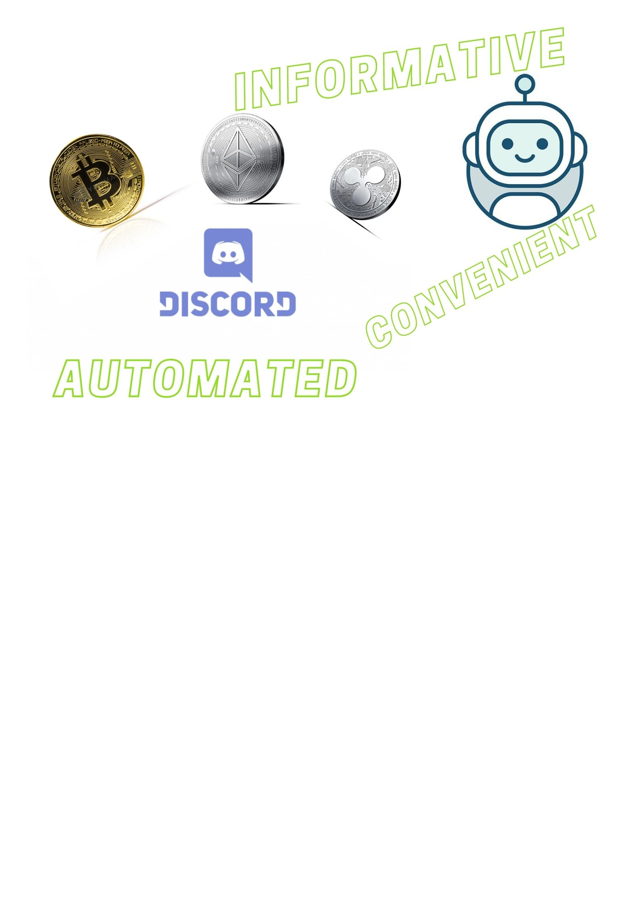
My top 3 tech innovators:
1. Gabe Newell
2. Elon Musk
3. Jeff Bezos -
12th feb, 2021
Aviici project workshop
We were invited to participate in a very interesting workshop demonstrating visualization of songs, movies or text and what the emotion was behind it. (If the text is sad,happy,etc)
I did the whole album from the artist The Weeknd - Starboy.
This is what I came up with:We also learned how to dropship items via RedBubble.com and I got to broaden my creative vision with the examples the tutor gave.
-
22th feb, 2021
Workshop on creative manifest
I talked to my teacher about my project and they gave me some ideas and I started excuting upon them.
During the workshop I learned that a manifest is a short list of rules or visions of a way of being.
We read articles about creative tech and discussed within eachother in breakout rules, we also combined the manifest lines from each of the breakout groups into 1 big one for the next people that decide to go for Creative Tech.
The article we read could be found here. -
23th feb, 2021
Started working on research and implementation on my individual project
I started researching on how discordJS works, what dependencies I will need, and overall how to create a discord bot.
Initially I wanted to use Python for my project, since most bots outside of discord are also created in python.
The set up proved to be harder than I expected it, and the enviornment did not want to work properly on my computer, and I decided to switch to JavaScript, since I already have NodeJS on my computer ready to go, and I have limited time to work on the project and did not want to be stuck in a loop of trying to fix Python. -
24th feb, 2021
Workshop on how to learn new technology
The workshop helped me realise how much tech is around us and we don't even notice it.
Doing technology research helps us make a believable story to the client/users and gives substance to the project.
I had a semester coach meeting with Geert Ouwendorp.
Started working on my discord bot, and decided that I would like to make it a moderation bot, meaning that a Administrator of an already existing server can you is for various operations! (e.g Temporary mute, Ban, Unban, Kick, Perma Mutes, Timed Mutes etc.) -
1st mar, 2021
Workshop on prototyping
We learned that attaching ourselves to prototypes can prove to be bad, so we should focus on making them quick and simple. There can be multiple types of prototypes, some for functionality and some for design depending on your poject.
We made a paper plane prototype as an example.
I watched a documentary on netflix called "The art of design". -
2nd mar, 2021
Workshop on creative coding
The lecture discussed that some of the expectations are a proof of concept, what my creative tech vision is and explenation on how my project came to fruition.
-
8th mar, 2021
Meeting with the class on what is expected for delivery on Wednesday and Friday
Our teacher explained what we need to have ready for Wednesday and Friday, I also had some questions about what my portfolio should look like and some of the students gave me ideas in the chat.
I started working on creating this web-page that you are currently on and continued working on my discord bot, adding more benefitial features, like listening to music, and giving the bot a little bit of "life", so when you ask it for a !joke, it will send you a unique joke in the chat. -
9th mar, 2021
Workshop on communication between hardrware devices
We had a workshop on how hardware devices communicate with eachother, sadly however I did not have the box and could not work on testing these methods.
-
10th mar, 2021
Feedback on my project from Erik, portfolio feedback with Geert and semester coach meeting
Geert asked us how we're feeling about the project and how is the development going.
I recieved feedback on my portfolio and worked on it, creating a seperate page explaining my development process and adding more substance to the timeline part of the portfolio.
I also had a feedback session with Erik and showed him what I've worked on, giving him a demo. He liked it and had some questions regarding permissions and who/how/what can use the bot. I gave him a detailed explenation and he liked the project overall and told me to keep up the good job. -
1st phase of Duo project
Overview of the first phase of my duo project with Daan
During the first phase it was a bit chaotic trying to find a duo mate, because I was matched with 3 different people and a 4th person was also added later on.
I listened to the other people's ideas and came to a consensus that I want to work with Daan.
We started thinking about what we wanted to work on. I thought of 2 ideas: Gesture keyboard, eye-tracking keyboard, both of which can help impaired people with typing on a PC. Daan suggested a complimenting mirror and after further discussions we decided to go ahead with the mirror.
We started brain storming on what we want to create and Daan came up with a sketch for it: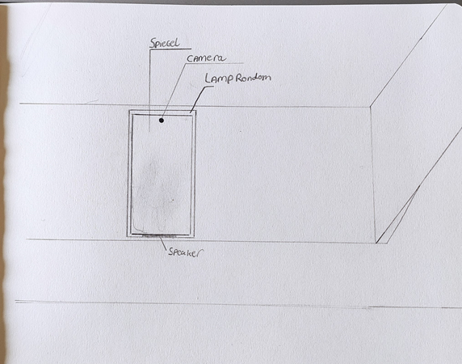
After more discussions we decided we wanted to present this idea to our teachers on friday and showed them an example:
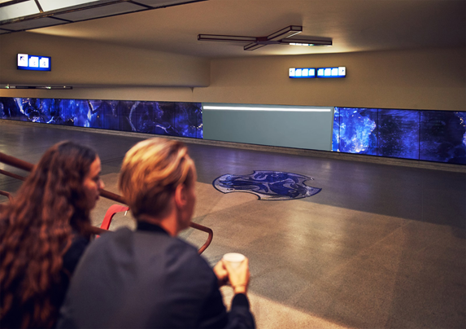 -
2nd phase of Duo project
Overview of the second phase of my duo project with Daan
During the second phase we wasted no time and started working on prototyping.
We started gaining inspirations from different mirror examples, like such:
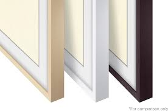Meanwhile I started researching how we would like to detect people and we decided that face-recognition might be our best solution.
I was thinking of using OpenCV but then I found this easy to use neat JavasCript face-recognition api called face-api.js and you could do many things with it.
For example it assumes your age and/or facial expressions: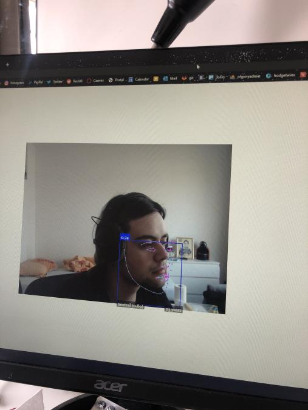 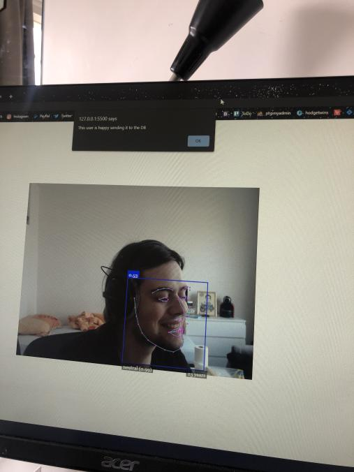 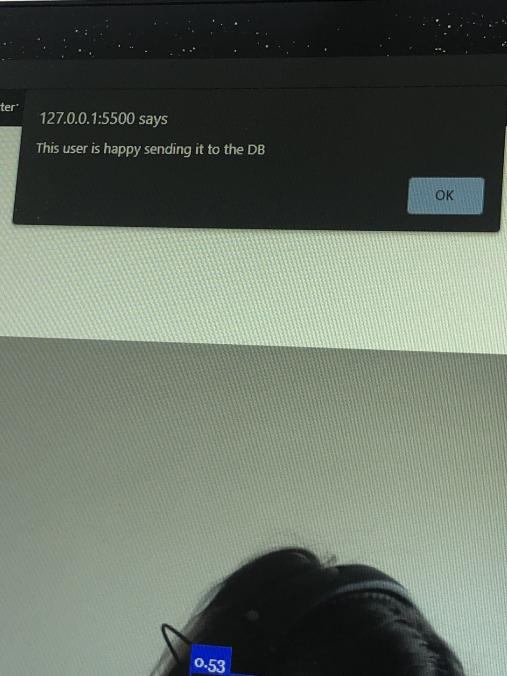In the image above you can see an example of me using the api and calibrating it so it detects my smile and after that it "sends that smile" to the datbase.
Meanwhile Daan created a lo-fi prototype:
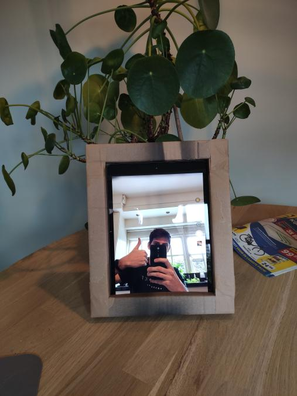
After seeing this prototype we started thinking how we should implement the camera and we decided to use 2 cameras. One for the face detection and one for the "mirror", which will only show the reflection of the person.
I also made the face detection send out a compliment whenver it detects someone with a 95% confidence.
Here is an example of someone using it: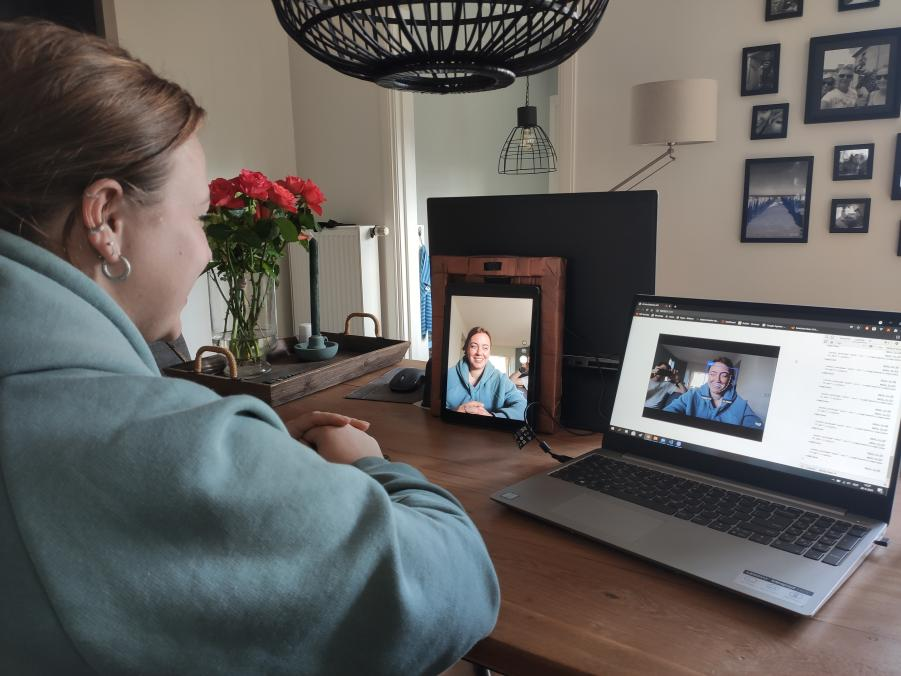The laptop has the recognition softawre, while the tablet is the "mirror" and that's the only thing the user will actually be exposed to.
-
3rd phase of Duo project
Overview of the third phase of my duo project with Daan
During this phase I have worked on creating an architecture diagrams folllowing the c4 model.
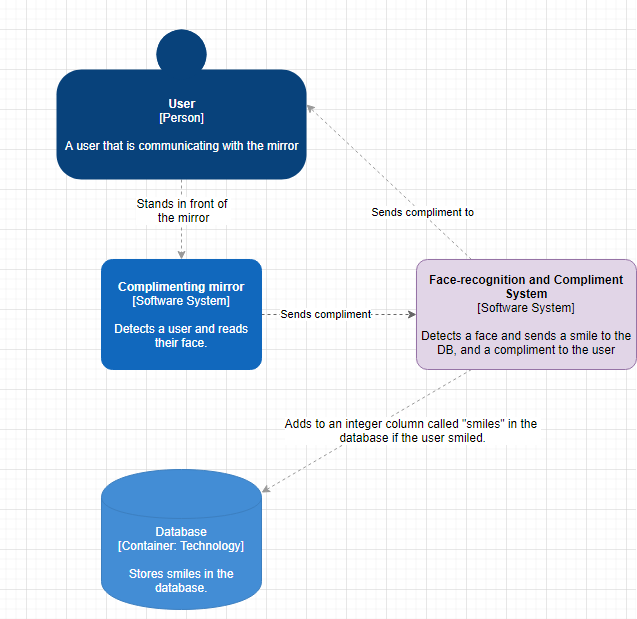
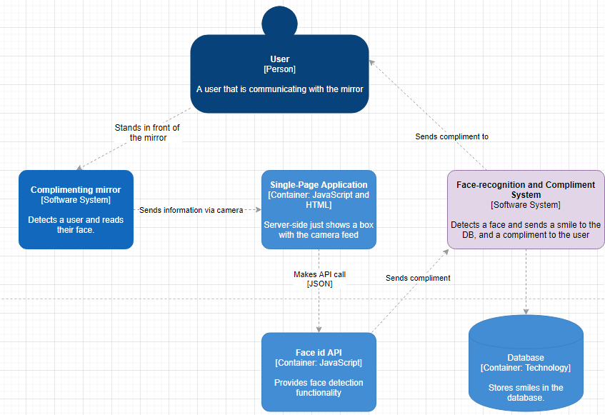I have also made it so everytime the user's face is recognized, the speakers send a random compliment (from 10 choices)
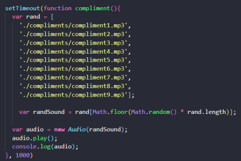Due to misconception over if I have worked on deisgning the prototypes, I have created a sketch of what I pitched to Daan, on what the prototype should look like. I should have added it to earlier phases in reality since we came up with it a week ago, however I did not know that I needed to actually show it to the teachers.
This is what we orignially had:And this is what I proposed we should be using:
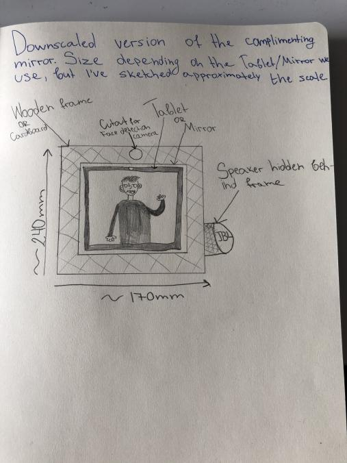We also started working on a document explaining reasons for using design methods, hardware decisions and software decisions.
-
4th phase of Duo project
Overview of the third phase of my duo project with Daan
During this phase we fixed the compliment spam. I created the use-case and also the activity diagram for the project, and helped Daan with the Test Plan.
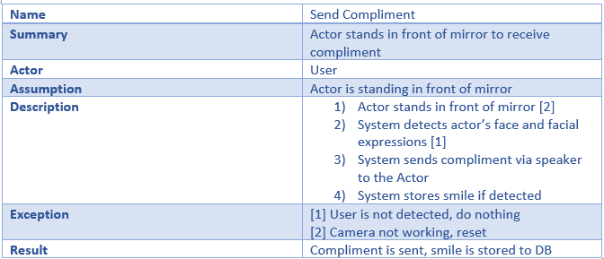
We also switched up our roles and Daan started working mostly on the software, while I started working mostly on the prototype and design decissions. I asked Daan to spare me some wood that he had in his house, and after I got the pieces, I glued them to a frame that houses the iPad.
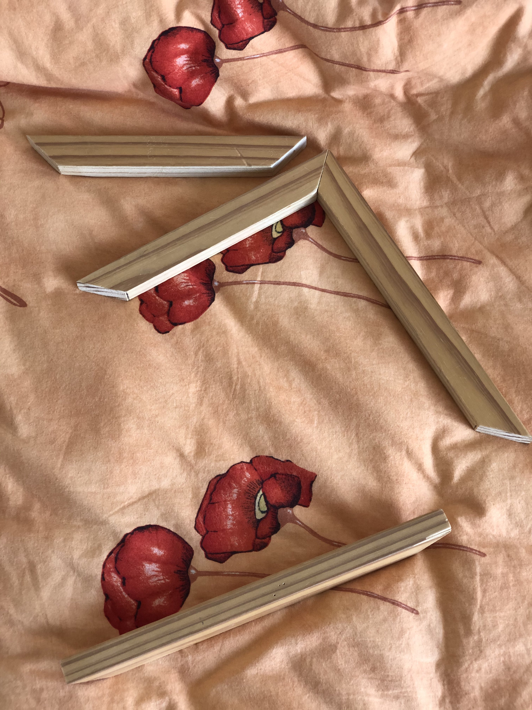
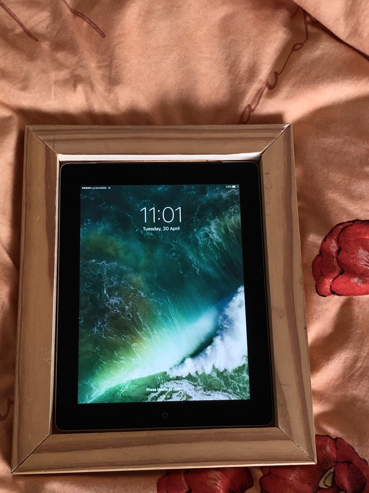 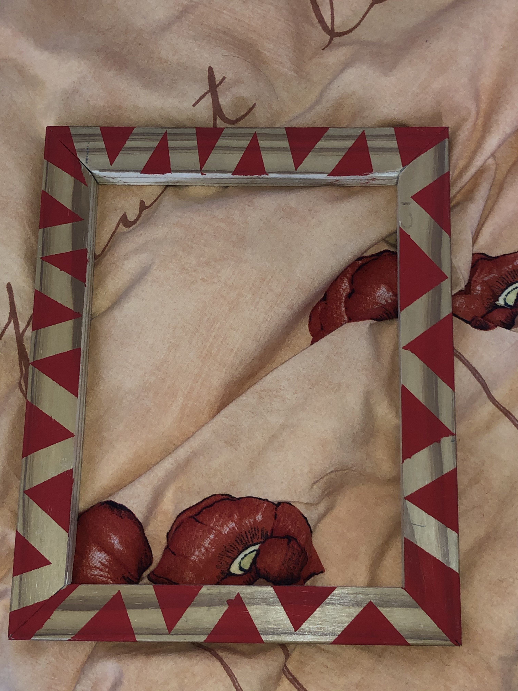(unfinished pattern, still need to add black )
After I've assambled the frame, I decided that in order to make the product lovable, I want to add a screen saver with some wavey colors that might intrigue users to approach it (e.g.)

I also decided that adding amibent noise every 5 minutes for example is aslo a great addition into the lovable part. And finally I will be painting the frame in a pattern, just to add a little "spice" into it.
Finally, I have recorded compliments for when the person has a "neutral" face and a "sad" face. I've asked some of my friends what they would like to hear if they were sad, and I added some of the suggestions they gave me.
Visceral, behavioral, reflective design assignment
Example pictures of items I own, and items from the internet
Items I Own:
Visceral - My Airpods skin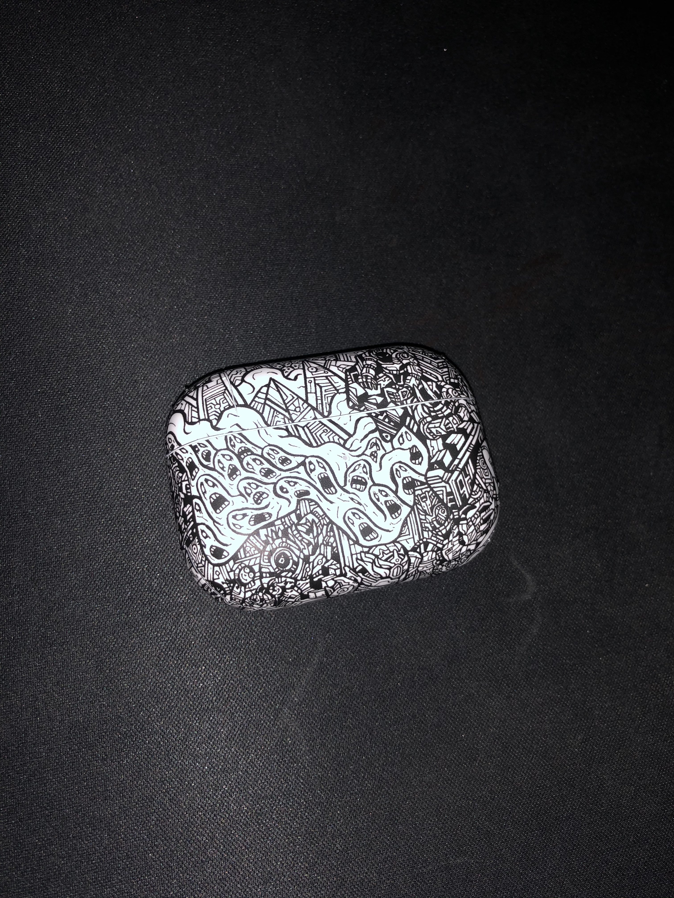
Behavioral - My PC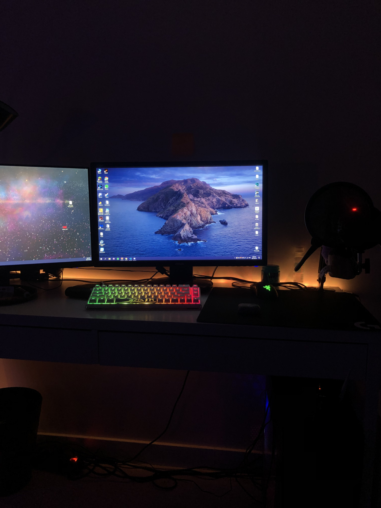
Reflective - United States two-dollar bill
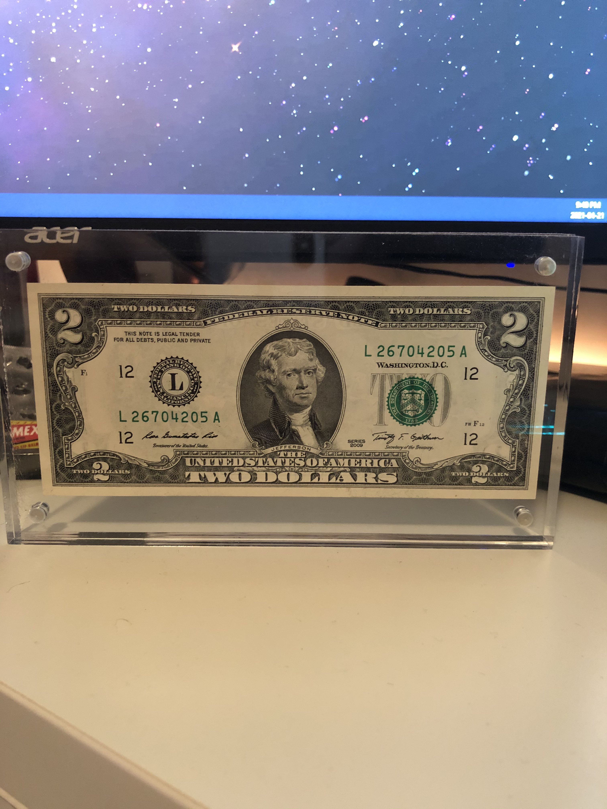
Items I found on the internet: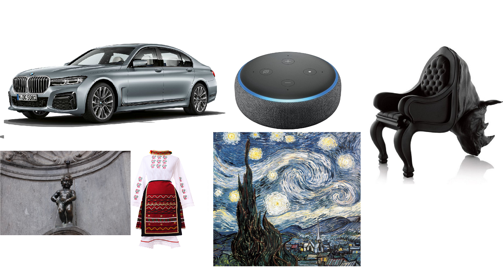